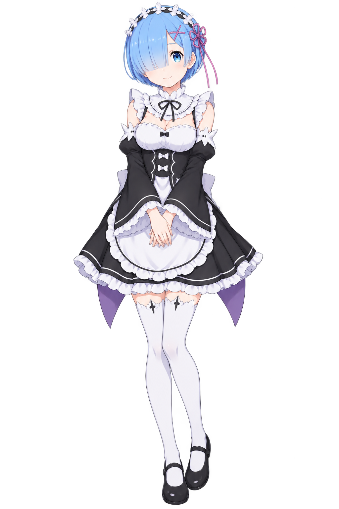

本地直开 · 当前为内嵌快照。自动读取最新 MD 请双击「打开网页.cmd」。
Re:Zero · Rem
“1人で歩くのが大変なら、レムが支えます。”一个人走太辛苦的话，雷姆会扶着你。
蓝色长夜，雷姆就在旁边，陪你把读过、看过、哭过的那些片段再翻一遍。

Rem · 阅读与长夜随记
Re:Zero · Rem
“1人で歩くのが大変なら、レムが支えます。”一个人走太辛苦的话，雷姆会扶着你。
蓝色长夜，雷姆就在旁边，陪你把读过、看过、哭过的那些片段再翻一遍。
